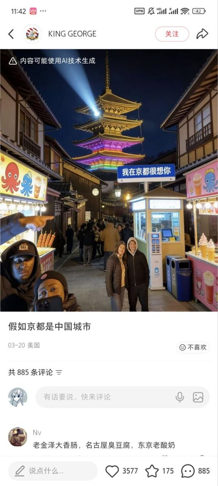

小虚空🍥
@tokerumaisurii
@nanami_mua @konoGuanine 中国对太多旅游区的开发都过度商业化了，也经常不遵循原本风格，导致每个景区都有一堆刺眼不和风格的东西，或者说自成风格因为每到一个地方景区都长这样。可能筹建和策划运营模式的时候根本没经验也没做考察。说真的，真正“商业化”的那些品牌化的大商场大商业街反而懂得做设计和管理，该去请教他们的。

Nanamiao～🏳️⚧️
@nanami_mua
最大感悟：中国人失掉了欣赏美的能力，缺乏美学教育，更缺少欣赏美的环境。在中国街上走只能感受到浮躁和杂乱无章。 https://t.co/tCHu9OCIDi